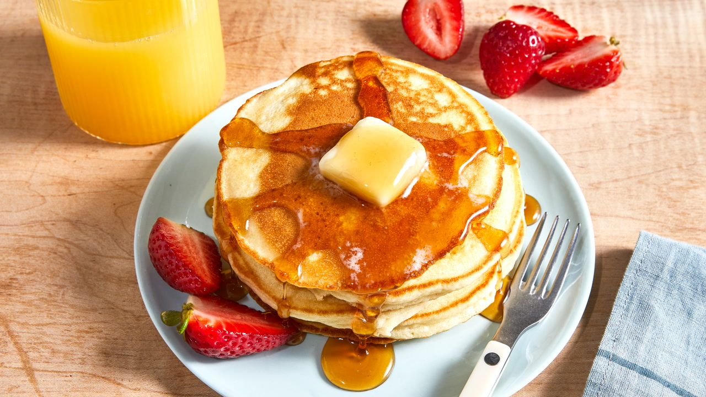

Pancakes
Prep: 15 mins
Difficulty: Easy
Serves: 4

Ingredients
- 1 cup all-purpose flour
- 2 tablespoons sugar
- 1 teaspoon baking powder
- ½ teaspoon baking soda
- ¼ teaspoon salt
- 1 cup buttermilk (or milk with 1 tsp vinegar)
- 1 large egg
- 2 tablespoons melted butter
- Maple syrup and fresh berries to serve
Instructions
- In a large bowl, whisk together the flour, sugar, baking powder, baking soda, and salt.
- In a separate bowl, beat the egg and mix in the buttermilk and melted butter.
- Pour the wet ingredients into the dry ingredients and stir gently — do not overmix. A few lumps are fine!
- Heat a non-stick pan over medium heat and lightly grease with butter or cooking spray.
- Pour about ¼ cup of batter per pancake onto the pan. Cook until bubbles appear on the surface (about 2 minutes), then flip and cook for 1 more minute.
- Repeat with the remaining batter. Serve warm with maple syrup and berries.
Back to Home